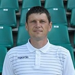
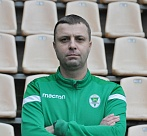
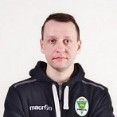

Дроздов Василий Андреевич
Директор ООО «ФК «Гомель»
Василий Андреевич родился 3 мая 1975 года в Гомеле. Будучи футболистом, выступал на позиции крайнего защитника и суммарно провел 221 матч в составе нашего клуба. После завершения карьеры игрока работал в структуре «Гомеля» тренером-администратором и начальником команды.
- В 1993 году поступил в Гомельский государственный университет им. Ф. Скорины на факультет физической культуры.
- В 1998 году получил диплом по специальности «Физическая культура», присвоена квалификация «Учитель физической культуры, тренер по спортивным играм».
-
В 2006 году обучался на заочной форме обучения в Институте повышения квалификации и переподготовки руководящих работников и специалистов физической культуры, спорта и туризма Белорусского государственного университета физической культуры и в 2008 году присвоена специальность «Тренерская работа (по
футболу)».
- В 2012 году окончил Федеральное государственное бюджетное образовательное учреждение высшего профессионального образования «Государственный университет управления Российской Федерации» (г. Москва), присвоена квалификация «Менеджмент в игровых видах спорта».
- Мастер спорта Республики Беларусь по футболу, бронзовый призер Чемпионата Республики Беларусь 1999 года, обладатель Кубка Республики Беларусь 2002 года.
- С 2013 по 2017 год Василий Дроздов был заместителем начальника отдела образования, спорта и туризма Гомельского райисполкома, а с 2017 по 2019 год возглавлял районный физультурно-спортивный клуб «Урожай».
- В 2019 году был назначен директором Гомельского областного центра олимпийского резерва по игровым видам спорта.
- С 9 марта 2020 года ― директор футбольного клуба «Гомель».

Борель Виктор Васильевич
Спортивный директор
Родился 10 марта 1974 года в г. Петропавловск-Камчатский, РСФСР. Воспитанник ДЮСШ г. Гомеля.В 1995 году закончил факультет физической культуры ГГУ имени Франциска Скорины. Спортивную карьеру начал в ФК «Гомсельмаш» (1992 г.), затем выступал за ФК «Динамо Минск» (1995 г.), ФК «Гомель» (1997-2002 гг.), ФК «Металург-Кузбасс» (2003 г.),
ФК «Шахтёр» (Солигорск) (2003-2006 гг.), ФК «Спартак» (Нижний Новгород) (2006 г.). Клубную карьеру завершил в ФК «Гомель » в 2007 году.
- В составе ФК «Гомель» бронзовый призёр чемпионата Беларуси 1999 г.
- Двукратный обладатель Кубка Республики Беларусь в составе ФК «Гомель», 2001-2002 гг., и ФК «Шахтёр» (Солигорск) в 2003-2004 гг.
- В 2004 году бронзовый призёр чемпионата Республики Беларусь в составе команды «Шахтёр» (Солигорск).
- Чемпион Республики Беларусь в составе команды «Шахтёр» (Солигорск) (2005 г.).
Принимал участие в квалификации лиги Чемпионов УЕФА. С 2007 года начал тренерскую карьеру в ФК «Гомель».
- В 2007 году главный тренер дублирующего состава ФК «Гомель», бронзовый призёр чемпионата Беларуси среди дублёров.
- В 2008-2009 входил в тренерский штаб основного состава ФК «Гомель».
- С 2011 по 2014 год тренер юношеских команд ФК «Гомель». Под его руководством команда 1995 года рождения стала трёхкратным чемпионом Республики Беларусь.
- В 2013 году работал в тренерском штабе юношеской сборной Республики Беларусь по футболу, в 2014 году возглавил сборную Беларуси U-19.
- В 2015-2016 годах входил в тренерский штаб основной команды ФК «Гомель».
- С 2017 года главный тренер дублирующего состава ФК «Гомель».
- С 2019 года -- тренер юношеских команд ФК «Гомель».
- В январе 2021 года назначен спортивным директором ФК «Гомель».
Мастер спорта Республики Беларусь по футболу, обладатель Pro-диплома УЕФА. Женат, воспитывает троих детей.

Мартьянов Никита Станиславович
Начальник команды
Родился 14 апреля 1981 года в Гомеле
В 2005 году Никита Станиславович окончил факультет физической культуры ГГУ имени Ф. Скорины, а в 2006 году магистратуру этого вуза. Долгое время работал старшим преподавателем кафедры спортивных дисциплин. Мартьянов трижды становился чемпионом Беларуси по мини-футболу среди молодежных и юношеских команд, а также завоевывал медали
республиканской универсиады по футболу, мини-футболу и футзалу.
С января 2021 года ― начальник команды.
Ровда Ирина Александровна
Главный бухгалтер ООО «ФК «Гомель»
Родилась в Гомеле.
Окончила Гомельский кооперативный институт. Работала в Гомельском районном потребительском обществе, в КУП «Комплекс по переработке и захоронению токсичных промышленных отходов Гомельской области», в ГДЮСШ №7 г. Гомель.
С ноября 2007 года - главный бухгалтер ФК Гомель.

Радзивон Дмитрий Леонидович
Пресс-секретарь ФК «Гомель»
Родился в 1985 году в г. Гомеле.
Окончил в 2008 году Белорусский государственный университет (специальность - журналистика (печатные СМИ))
С января 2015 года - пресс-секретарь ФК "Гомель"
Буленкова Жанна Юрьевна
Инспектор по кадрам, секретарь приемной
Родилась в 1971 году в Бресте.
Образование высшее (Гомельский государственный технический университет имени П.О. Сухого, инженер-технолог).
Работала в Белорусском речном пароходстве, ОАО "Сельспецмонтаж" (начальник отдела кадров).
С 2003 года - инспектор по кадрам, секретарь приемной ФК "Гомель"